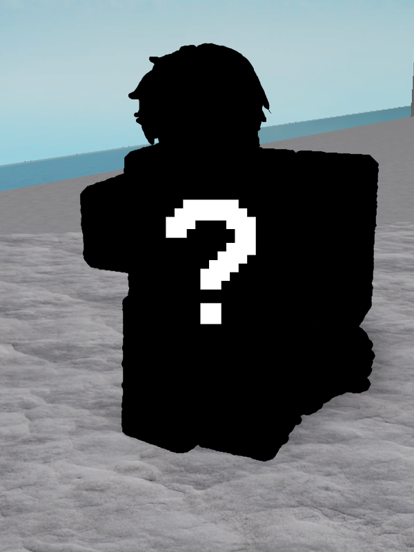

Jason

Jason is one of the most notable characters of Test Place: Remastered. He is one of the most mysterious characters in Test Place. There is very little information on this individual, as if he never
existed.
Trivia
• Jason is represented as a dark sillhouette with a white question mark.
• Some people represent Jason as a person with a suit, red tie and white skin.
• Jason can be found on top of one of the mountains in T.P.R.
• You are able to talk to Jason, but he will not move and will ALWAYS stay in the same spot.
• His idle animation is a reference to the Lost Survivor from SCP-3008.
• Jason (canonically) has dark hair.
• Some people represent Jason as a person with a suit, red tie and white skin.
• Jason can be found on top of one of the mountains in T.P.R.
• You are able to talk to Jason, but he will not move and will ALWAYS stay in the same spot.
• His idle animation is a reference to the Lost Survivor from SCP-3008.
• Jason (canonically) has dark hair.